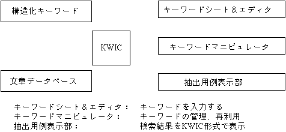

（４７）用例検索ツール：ＫＷＩＣ（ＥＳＰ版）
マ シ ン：PSI-II
環 境：SIMPOS
言 語：ESP
ソース量：11 MB (DB含む)
文 書：マニュアル (日本語)
概要
ユーザが指定したキーワードを満たす用例を文章データベースから検索するツー
ル
構成

機能
従来のフルテキストサーチのように単なる表層の文字列だけでなく、例えば、
『(人間)ガ(場所)デ〜スル』のような文法情報も含んだ複雑なキーワード(構
造化キーワード)を指定できるため、種々の言語現象を抽出でき、日本語処理
を行うために必要な辞書や文法などの収集、構築に有効である。
- 構造化キーワード (表記、品詞情報、活用情報、意味素性、など)
- 文章データベース (16出典、4,500文)
- キーワード管理、再検索、サンプル検索、結果同士の集合演算
- ソート出力、センタリング表示、詳細表示
備考
UNIX上で動作する KWIC(CESP版) もある。
ＦＴＰ
- 用語検索ツール：ＫＷＩＣ（ＥＳＰ版） [1,924K]

- 用語検索ツール：ＫＷＩＣ（ＥＳＰ版 第２版） [2,052K]
www-admin@icot.or.jp